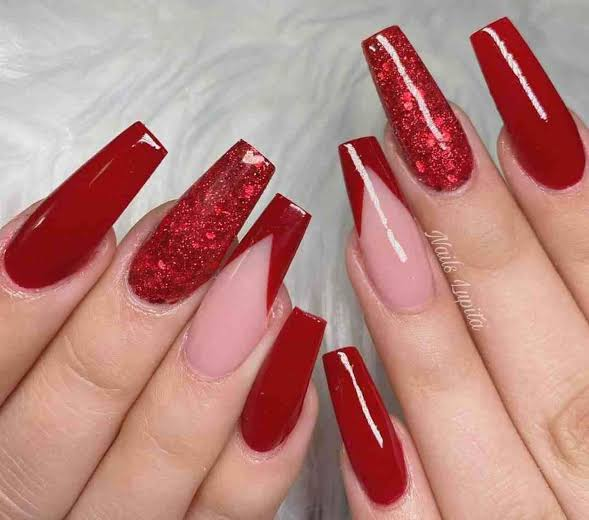

As unhas fazem parte da nossa aparência e também podem indicar como está a nossa saúde. Além de serem um detalhe importante na composição do visual, elas merecem cuidados frequentes para permanecerem fortes, bonitas e bem cuidadas.
